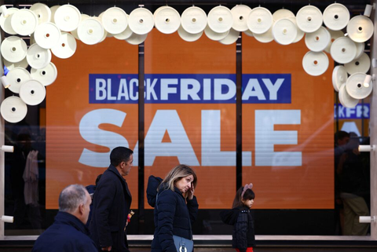

Recent economic literature identifies two primary mechanisms that drive the organization of seasonal peaks in retail. First, intertemporal substitution and consumer inventory—household stockpiling—shows how temporary price reductions shift demand forward, as consumers purchase more during sales and then draw down inventories afterward (Hendel and Nevo, 2005). Second, platform-designed "shopping festival environments," including scarcity promotion, social interaction, and gamified promotions, amplify consumers' perceptions of the event and strengthen purchasing demands around important dates (Li et al., 2025).
Digital platforms are increasingly packaging cultural and religious holidays into extended, promotion-driven "sale seasons," homogenizing the seasonality of global retail.
Seasonal Peaks in the United States
In the United States, the retail center has shifted to late November and early December, specifically for the period between Thanksgiving and Cyber Monday. Deloitte (2025) identifies this as the peak period, with Cyber Monday consistently ranking as the biggest online shopping day. Adobe reports $137.4 billion in online spending from November 1 to December 1, 2025, while Reuters reports $44.2 billion in online sales during the five-day period from Thanksgiving to Cyber Monday (Adobe Analytics, 2025; Reuters, 2025). This change coincides with "Christmas Creep," in which retailers begin promotions earlier; however, the majority of spending remains concentrated at the end of November due to predictable promotional cycles (Mastercard SpendingPulse, 2025).
Asia's Shopping Festivals and Cultural Drivers
In China, Singles' Day on November 11 marks the peak month for e-commerce, a holiday created by Alibaba in 2009 (Li et al., 2025). While Lunar New Year remains a cultural peak for travel and dining, 11.11 functions as an "artificial" shopping holiday optimized for discounts (McKinsey & Company, 2019). Recently, this festival has expanded into a multi-week season beginning in October, though the festival atmosphere maintains 11.11 as the focal point for purchasing intent (Reuters, 2025).

In India and Southeast Asia, consumption peaks center on culturally significant dates such as Diwali, typically falling in October or November (IBEF, 2025). However, the region increasingly uses digital platforms' "megasales" that begin weeks in advance, merging traditional cultural demand with the intensity of modern e-commerce. In Southeast Asia broadly, November emerges as a peak that combines global events—Singles' Day and Black Friday—in consecutive waves. These platforms extend and amplify cultural moments into commercial seasons rather than discrete purchasing events.
Convergence Toward Global November Peaks
The United Kingdom and Europe, like the United States, have shifted toward November as the primary discount month, with the traditional "Boxing Day" being displaced by "Black Friday." The British Retail Consortium (2025) reports that consumers actively delay spending in anticipation of Black Friday. Türkiye exhibits similar globalization patterns, with peaks in "Kasım İndirimleri" (November discounts) and "Efsane Cuma" (Legendary Friday, the Turkish adaptation of Black Friday reflecting local cultural and religious concerns). PwC Türkiye (2025) notes that consumers approach this period with predetermined purchasing needs, indicating high levels of planned buying rather than spontaneous browsing on e-commerce platforms.
Comparative evidence suggests a global convergence toward November as the dominant retail peak. While cultural and religious holidays—Diwali, Lunar New Year, Eid—remain drivers of consumption, digital platforms now embed them into extended, promotion-driven "sale seasons." This pattern supports the hypothesis that platform dynamics and discount predictability are homogenizing the seasonality of global retail, creating synchronized purchasing cycles across diverse economies and cultures.
Selected References
- Hendel, I., & Nevo, A. (2005). Measuring the Implications of Sales and Consumer Inventory Behavior. NBER Working Paper 11307. https://doi.org/10.3386/w11307
- Li, J., Wang, X., & Gu, Q. (2025). Shopping festival atmospherics of China's singles day shopping festival and participants' perception: Scale development and validation. PloS One, 20(6), e0324989. https://doi.org/10.1371/journal.pone.0324989
- McKinsey & Company. (2019). Singles' Day: The shopping holiday that took over the world.
- Deloitte. (2025). 2025 Holiday Retail Survey: United States and Global Outlook. Deloitte Insights.
- PwC Türkiye. (2025). Efsane Cuma Dosyası 2025. https://www.pwc.com.tr/efsane-cuma-dosyasi-2025
- British Retail Consortium. (2025). Retail Sales Monitor: November Trends.